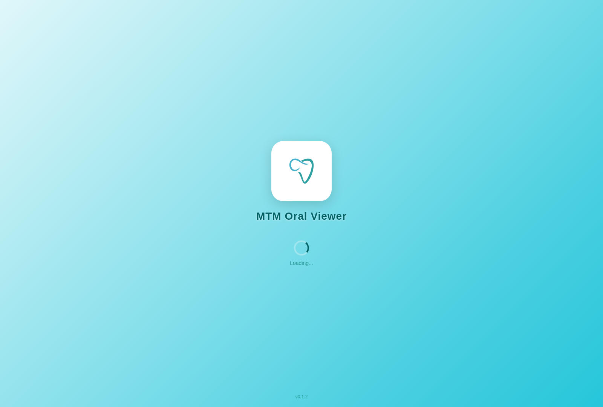
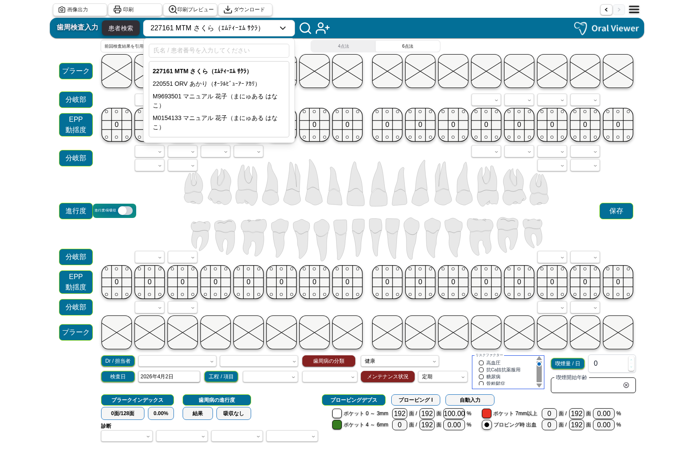
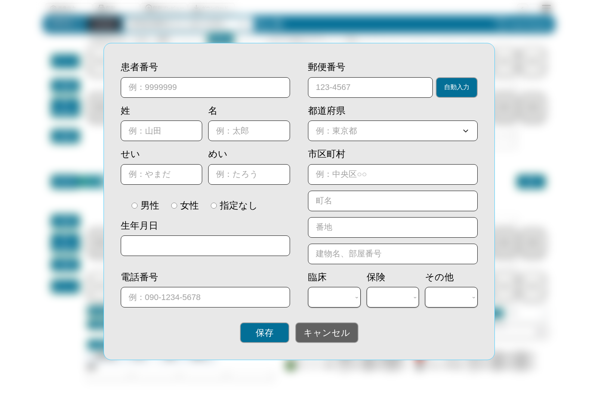
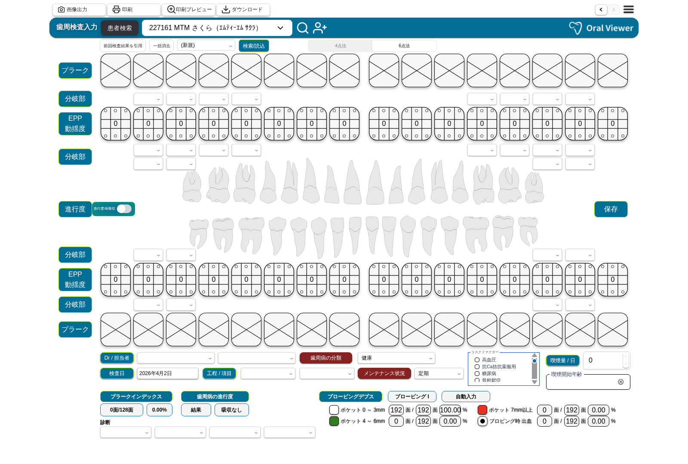
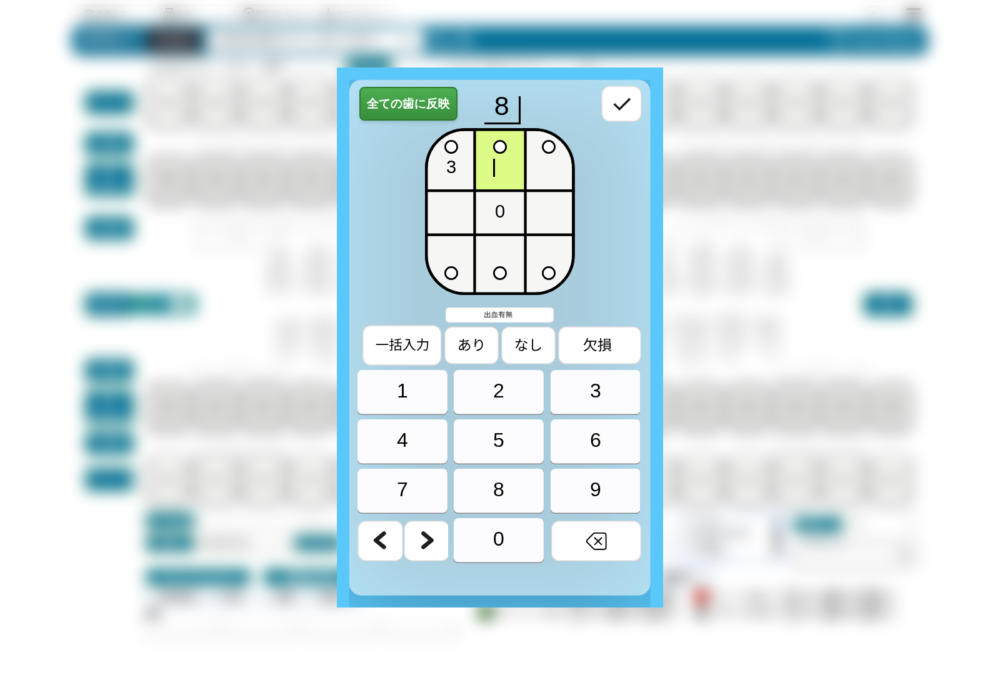
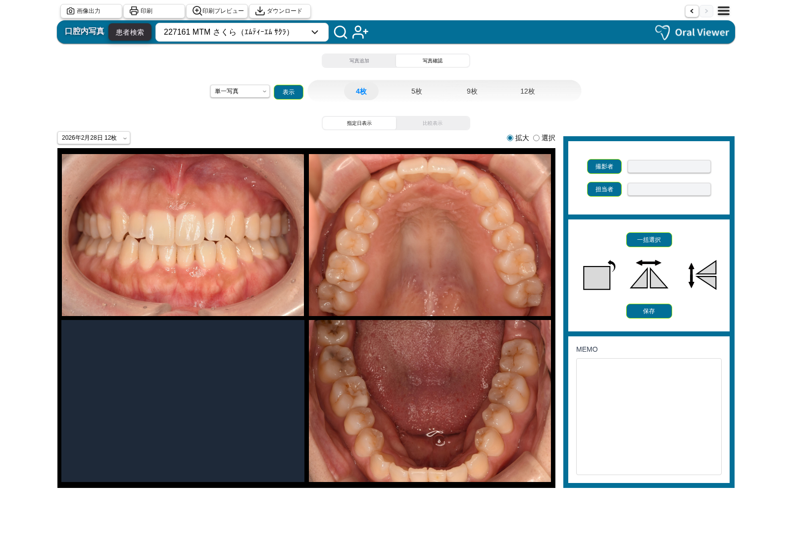
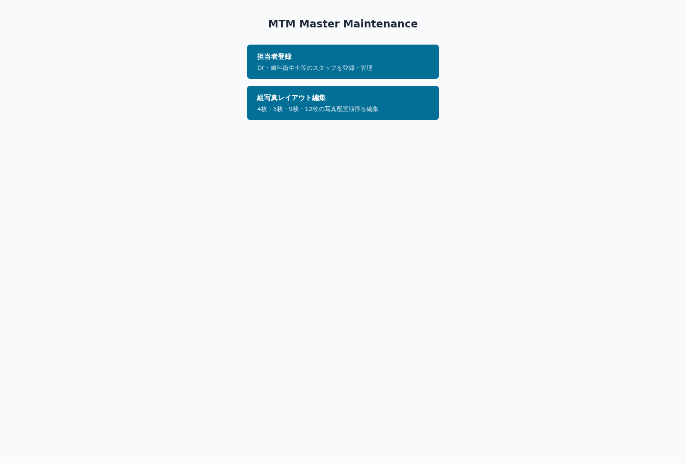

チームで使いこなす — OralViewer 新機能紹介
OralViewerは継続的に進化しています。新しい機能を一つひとつ取り入れながら、チーム全体のケアの質をステップアップさせていきましょう。
操作マニュアル
医療スタッフ向け操作ガイド | Ver 1.0 | 2026年4月
アプリを起動する
MTM OralViewerを起動してメイン画面を表示するまでの手順です。
デスクトップの「MTM OralViewer」アイコンをダブルクリックします。iPadの場合はホーム画面のアイコンをタップします。
起動するとロゴと読み込み状況が表示されます。完了まで待ちます。

読み込み完了後、メイン画面が自動表示されます。最初の画面はインストール時の設定により異なります。
画面上部の青いバーが「ヘッダー」です。左側に出力ボタン群（画像出力・印刷・プレビュー・ダウンロード）、中央に患者検索ボックス、右側にメニューボタン（三本線）とロゴが配置されています。
iPadアプリで使用できる機能は歯周検査画面のみです。操作は「クリック」→「タップ」に読み替えてください。
患者を探す・選ぶ
登録済みの患者を検索して選択する方法です。患者を選ぶと、その患者の検査データや写真が表示されます。
ヘッダーにある「患者を検索...」と薄い文字で表示されている部分です。
検索ボックスをクリックします。入力欄が開き、「氏名 / 患者番号を入力してください」と表示されます。
| 検索方法 | 入力例 | 説明 |
|---|---|---|
| 氏名 | 「田中」 | 名前の一部を入力すると候補が表示されます |
| 患者番号 | 「2271」 | 患者番号の一部でも検索できます |
| フリガナ | 「さくら」 | ひらがな・カタカナで検索できます |

条件に一致する患者が一覧表示されます。目的の患者をクリックして選択します。
編集中データがある場合、「データが破棄されます。よろしいですか？」という確認メッセージが表示されます。問題なければ「OK」をクリックします。
患者が切り替わり、ヘッダーの検索ボックスに選択した患者の名前が表示されます。画面のデータも選択した患者のものに切り替わります。
新しい患者を登録する
まだ登録されていない患者を新規登録する方法です。
ヘッダーの患者検索ボックス右側にある「＋」（プラス）ボタンをクリックします。
「患者新規追加」の入力画面（モーダル）が表示されます。

以下の必須項目を入力してください。
| 項目 | 入力内容 | 備考 |
|---|---|---|
| 患者番号 | カルテ番号など施設で使用している番号 | 必須・重複不可 |
| 姓 | 患者の名字 | 必須 |
| 名 | 患者の名前 | 必須 |
| せい（姓フリガナ） | ひらがなで入力 | 必須 |
| めい（名フリガナ） | ひらがなで入力 | 必須 |
| 性別 | 男性 / 女性 / 指定なし を選択 | 必須 |
| 生年月日 | カレンダーから選択、または直接入力 | 必須 |
| 任意項目 | 内容 |
|---|---|
| 電話番号 | 患者の連絡先電話番号 |
| 郵便番号 | 住所の郵便番号 |
| 都道府県・市区町村・町名・番地・建物名 | 住所情報 |
| 臨床 / 保険 / その他 | ドロップダウンから選択 |
すべて入力したら画面下部の「登録」ボタンをクリックします。確認ダイアログで「OK」を押します。
「登録しました」というメッセージが表示され、入力画面が閉じます。登録した患者が自動的に選択された状態になります。
画面を切り替える
MTM OralViewerには4つの主要画面があります。ヘッダーのメニューから切り替えます。
| 番号 | 画面名 | 用途 |
|---|---|---|
| 1 | 歯周検査入力画面 | ポケット深度や出血などの歯周検査データを入力 |
| 2 | 歯周検査レーダーチャート | 過去の歯周検査結果を比較・確認 |
| 3 | う蝕検査入力画面 | カリオグラムなどのう蝕リスク評価を入力 |
| 4 | 口腔内写真画面 | 口腔内写真の追加、閲覧、比較 |
ヘッダー右上のメニューアイコン（三本線 ≡）をクリックします。メニューが開き、4つの画面名が表示されます。現在表示中の画面は青色でハイライトされています。
- 「歯周検査」→ 歯周検査入力画面
- 「歯周検査チャート」→ レーダーチャート画面
- 「う蝕検査」→ う蝕検査入力画面
- 「口腔内写真」→ 口腔内写真画面
ヘッダー左側の「←」（戻る）ボタンで1つ前の画面に、「→」（進む）ボタンで戻る前の画面に移動できます。
編集中のデータがある状態で画面を切り替えようとすると「編集中のデータは破棄されます。よろしいですか？」という確認が表示されます。切り替えてよい場合は「OK」を押します。
ヘッダー右端のロゴをクリックすると、歯周検査入力画面に直接移動できます。
歯周検査
ポケット深度・出血・プラーク指数・リスクファクターなどを入力します。入力値は自動集計され、統計値がリアルタイム表示されます。

iPadアプリで使用できる機能は歯周検査画面のみです。操作は「クリック」→「タップ」に読み替えてください。
検査を始める前に、以下の基本情報を設定します。
画面上部の「4点法 / 6点法」の切替スイッチを確認します。通常は「6点法」を使用します。切り替える場合はスイッチをクリックします。
「検査日」には今日の日付が自動入力されています。過去データの場合はカレンダーアイコンで変更します。
「Dr」プルダウンから担当医師を、「担当者」プルダウンから担当スタッフ（歯科衛生士など）を選択します。
「工程」「項目」のドロップダウンからテンプレートを選択します（任意）。
各歯の測定部位（頰側・舌側の各3点）のポケット深度を入力します。
画面中央の歯列図にある、入力したい歯のセル（四角いマス）をクリックします。ポケット深度入力モーダル（テンキー画面）が開きます。
モーダル上部に歯の番号、中央にプローブ図が表示されます。黄緑色にハイライトされている部分が現在の入力対象部位です。

下部のテンキー（0〜9）から測定したポケット深度の値をクリックします。値が入力されると、自動的に次の測定部位に移動します。続けて次の値を入力してください。
入力を間違えた場合は「←」（バックスペース）ボタンで1つ戻って修正できます。「◀」「▶」ボタンで前後の歯に移動できます。すべての測定部位を入力し終わったら、モーダルの外側をクリックして閉じます。
同じ値をすべての歯に適用したい場合は、「全ての歯に反映」ボタンをクリックします。
ポケット深度入力モーダル内の「出血」セクションで記録します。
「あり」「なし」「一括入力」「欠損」の4つのボタンがあります。出血があった場合は「あり」、なかった場合は「なし」をクリックします。
全ての歯の出血状態を一度に設定したい場合は「一括入力」をクリックします。画面下部の統計エリアに「プロービング時出血」の割合が自動計算されて表示されます。
歯列図のプラーク行にあるセルをクリックします。各セルは4つの領域（上・右・下・左）に分かれています。プラークがある領域をクリックすると黄色に変わります。もう一度クリックすると元に戻ります。
すべての歯について入力すると、画面下部に「プラークインデックス」の割合が自動計算されます。
分岐部病変がある歯については、該当する歯のドロップダウンから段階（1〜3）を選びます。
動揺度（歯のぐらつき）がある歯については、該当するセルをクリックして記録します。
「進行度 / 骨吸収」のトグルスイッチで表示を切り替えられます。歯列図の歯をクリックして段階を変更します（色が変わります）。
画面下部の「リスクファクター」セクションまでスクロールします。高血圧・糖尿病・骨粗鬆症など17項目のチェックリストが表示されます。該当する項目のチェックボックスをクリックしてチェックを入れます。
「喫煙量/日」に1日の本数を入力し、「喫煙開始年齢」に年齢を入力します。増減ボタン（+/−）で数値を変更できます。
入力が進むと、画面下部に以下の値が自動計算されて表示されます。
| 統計項目 | 内容 |
|---|---|
| プラークインデックス | プラーク付着率（○面/○面 ○○%） |
| ポケット 0〜3mm | 正常範囲のポケットの割合 |
| ポケット 4〜6mm | 中等度のポケットの割合 |
| ポケット 7mm以上 | 深いポケットの割合 |
| プロービング時出血（BOP） | 出血率 |
「自動入力」ボタンをクリックすると、集計値が診断欄に自動反映されます。「歯周病の分類」「メンテナンス状況」などのドロップダウンを必要に応じて設定します。
すべての入力が完了したら「保存」ボタンをクリックします。確認ダイアログで「OK」を押します。「保存しました」のメッセージが表示されたら完了です。
過去の検査データを引用したい場合は、「前回検査結果を引用」ボタンをクリックします。確認ダイアログで「OK」をクリックすると、前回の検査データが入力欄に読み込まれます。変更箇所のみ修正して保存できます。
入力内容をすべてリセットしたい場合は、「一括消去」ボタンをクリックします。確認ダイアログで「OK」を押すと、すべての入力値がクリアされます。
歯周検査チャート
歯周検査レーダーチャート画面では、過去の検査結果を最大3回分並べて比較できます。治療の効果を視覚的に確認し、患者への説明に活用できます。
メニューボタン（三本線）をクリックし、「歯周検査チャート」を選びます。レーダーチャート画面が表示され、最新の検査データが1列目に自動で表示されます。
1列目〜3列目それぞれの上部にあるドロップダウンをクリックして、表示する検査日を選択します。最大3回分の検査結果を横に並べて比較できます。
色付きの面積が小さいほど状態が良好です。検査を重ねるごとに面積が小さくなっていれば、治療効果が出ています。棒グラフでは「4mm以上率」「出血率」「プラーク率」を数値付きで確認できます。
| 項目 | 説明 |
|---|---|
| 各軸 | 年齢・プラーク指数・ポケット4mm以上率・出血率・リスクファクター・喫煙・メンテナンス・進行度 |
| リスク色 | 赤=ハイリスク／オレンジ=ミドル／黄緑=ロー／緑=ノーリスク |
| 折れ線グラフ | ポケット深度の推移を歯ごとに確認できます。グラフのON/OFFボタンで表示を切り替えられます。 |
う蝕検査
唾液検査の結果やカリオグラムに必要な8項目を入力します。入力した値はレーダーチャートで可視化されます。
メニューから「う蝕検査」を選んで、う蝕検査入力画面に移動します。
「検査日」「Dr」「担当者」を設定します（歯周検査と同様の操作です）。
以下の項目をドロップダウンや数値入力で記録します。
| 入力項目 | 内容 |
|---|---|
| 唾液緩衝能 | 即青・青・青緑/緑・黄緑/黄、または検査なし |
| ミュータンス菌の数 | 検査結果をドロップダウンから選択 |
| ラクトバチルス菌の数 | 検査結果をドロップダウンから選択 |
| 飲食回数 | 1日の飲食回数をドロップダウンから選択 |
| プラーク蓄積量 | プラークの蓄積レベルをドロップダウンから選択 |
| フッ素使用状況 | フッ素（家庭）・フッ素（診療所）・フッ素洗口をそれぞれ選択 |
| ムシ歯経験（DMFT） | う蝕経験の程度をドロップダウンから選択 |
| 5分唾液量 | 唾液量をドロップダウンから選択 |
初診時残存歯数・現在残存歯数・初診時DMFT・検査時DMFT数に値を入力します。「初診時年齢」「初診からの経過年数」「検査日年齢」は自動計算されます。
入力完了後「保存」をクリックします。確認ダイアログで「OK」を押します。「カリオグラムを開く」ボタンをクリックすると、カリオグラム評価画面が開き、リスク評価の円グラフを確認できます。
口腔内写真を追加する
「写真追加」モードで、撮影した写真をライブラリからグリッドに配置し保存します。
メニューから「口腔内写真」を選択します。
画面上部にある「写真追加 / 写真確認」の切替スイッチを確認し、「写真追加」をクリックします。左側にグリッド（写真の枠）、右側にサイドバー（ライブラリ）が表示されます。

グリッドの上にあるレイアウトボタン（4枚・5枚・9枚・12枚）から目的のレイアウトをクリックします。
| レイアウト | 特徴 | 用途 |
|---|---|---|
| 4枚 | 4枚分のグリッド枠 | シンプルな記録に適しています |
| 5枚 | 十字型（上顎咬合面・正面・左右側方・下顎咬合面） | 口腔内の全体像を記録するのに適しています |
| 9枚 | 9枚分のグリッド枠 | より詳細な部位別の記録に適しています |
| 12枚 | 12枚分のグリッド枠 | 最も詳細な記録が必要な場合に使用します |
右側のサイドバーにある「ライブラリ」パネルに撮影済みの写真のサムネイルが並んでいます。配置したい写真を長押し（マウスでドラッグ）して、左側のグリッド枠の上まで移動させ、指を離す（マウスのボタンを放す）と写真がその枠に配置されます。同じ手順を繰り返して、すべての枠に写真を配置します。
一括追加：「一括追加」ボタンをクリックすると、ライブラリの写真を自動的にすべての枠に配置できます。
一括削除：配置を間違えた場合は、「一括削除」ボタンですべての枠をクリアできます。
調整したい写真をクリックして選択します。選択された写真は枠線がハイライトされます。
サイドバーの画像変換ボタンで以下の調整が可能です。
| ボタン | 動作 |
|---|---|
| 回転 | 写真が90度回転します |
| 左右反転 | 写真が左右に反転します |
| 上下反転 | 写真が上下に反転します |
サイドバーの「撮影者」ドロップダウンから撮影者を選びます。「MEMO」欄に撮影に関するメモを入力できます（任意）。「保存」ボタンをクリックし、確認ダイアログで「OK」を押します。「保存しました」のメッセージが表示されたら完了です。
口腔内写真一覧
保存済みの口腔内写真を閲覧し、異なる日付の写真を並べて比較する方法です。
切替スイッチで「写真確認」をクリックします。
「指定日表示 / 比較表示」の切替で表示モードを選びます。
「指定日表示」を選ぶと、画面下部のタブ（フッター）に撮影日の一覧が表示されます。確認したい日付をクリックすると、その日の口腔内写真がグリッドに表示されます。
写真をダブルクリックすると拡大表示されます。拡大表示画面では、ズームイン・ズームアウト・全体表示・100%表示・全画面表示のボタンが使えます。拡大表示を閉じるには「×」ボタンをクリックするか、画像の外側をクリックします。
「比較表示」に切り替えると、左右に2つのパネルが表示されます。左パネルの下にある日付タブから1つ目の日付を、右パネルの下にある日付タブから2つ目の日付を選びます。2つの日付の写真が左右に並んで表示され、経時変化を確認できます。比較表示でも写真をダブルクリックすると拡大表示できます。
検査結果を印刷・出力する
各画面の検査結果や写真を、印刷・PDF・画像として出力できます。
ヘッダー左側にある4つの出力ボタンを確認します（左から: 画像出力・印刷・印刷プレビュー・ダウンロード）。
| ボタン | アイコン | 機能 |
|---|---|---|
| 画像出力 | カメラアイコン | 現在の画面を画像ファイル（PNG）として保存 |
| 印刷 | プリンターアイコン | 印刷ダイアログが開き、プリンターで直接印刷 |
| 印刷プレビュー | 虫眼鏡アイコン | 印刷される内容のプレビューを表示。確認後そのまま印刷も可能 |
| ダウンロード | 下矢印アイコン | PDFファイルとしてダウンロード。パソコンの「ダウンロード」フォルダに保存 |
出力したい画面（歯周検査、レーダーチャート、口腔内写真など）を表示した状態で、目的の出力ボタンをクリックします。
担当者を登録・管理する
マスタメンテナンスアプリで、医師やスタッフ（歯科衛生士など）を登録・編集・削除する方法です。
この操作は管理用の別アプリ「MTM Master Maintenance」で行います。OralViewer本体からは操作できません。
- Windowsの場合：デスクトップの「MTM Master Maintenance」アイコンをダブルクリックします。
- Webブラウザの場合：ブラウザで http://localhost:5174/ にアクセスします。
メニュー画面から「担当者登録」をクリックします。担当者登録画面が表示されます。

| 入力項目 | 内容 |
|---|---|
| 姓・名 | 担当者の氏名 |
| 姓カナ・名カナ | フリガナ |
| 表示名（Caption） | 画面上に表示される名前 |
| 種別 | Doctor / Assistant から選択 |
- 登録：入力が完了したら「登録」ボタンをクリック。確認ダイアログで「OK」を押すと登録されます。
- 編集：登録済みの担当者を編集するには、一覧の「編集」ボタンをクリックし、内容を変更して「更新」を押します。
- 削除：「削除」ボタンをクリックします。削除した担当者は「削除済み」と表示され、「復旧」ボタンで元に戻せます。
よくある質問
解決しない場合は お問い合わせ ください。
カスタマーサポート
操作方法・技術的な問題など、お気軽にお問い合わせください。
フォームからお問い合わせいただくと担当者よりご連絡します。
返答: 平日 10:00〜18:00（1〜2営業日）
緊急のシステム障害等はお電話でもご対応します。
番号はご契約時のご案内メールに記載
お問い合わせフォーム
ご意見箱
改善要望・新機能の提案・日頃のご感想をお聞かせください。開発チームが拝見します。
ご意見への個別返答は原則行っておりませんが、内容によってはご連絡する場合があります。